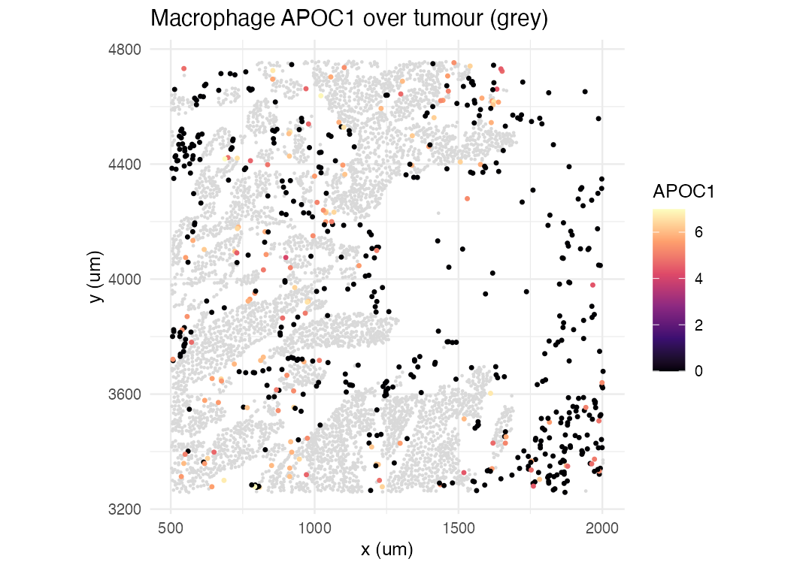

Installation
if (!require("BiocManager")) install.packages("BiocManager")
BiocManager::install("remotes")
remotes::install_github("ecool50/PACE")Introduction
PACE (Proximity-Associated Changes in Expression) is a framework for imaging-based spatial transcriptomics (such as Xenium and CosMx) that quantifies how a cell’s gene expression changes with proximity to specific neighbouring cell types. Rather than asking only which genes are spatially variable, PACE asks a directed question: when a macrophage sits next to tumour cells, which of its genes go up or down, and by how much?
PACE fits a hierarchical negative binomial mixed model with partial pooling across cell types, so that each focal-neighbour relationship borrows strength from the others and noisy pairs are regularised towards the consensus. A per-cell contamination term absorbs the short-range ambient signal that leaks between adjacent cells through segmentation error, so the estimated neighbour effect reflects biology rather than transcript misassignment.
Overview of the PACE workflow
A PACE analysis has three stages, all driven by the single call
paceFit():
- Neighbourhood construction. For every cell, a Gaussian biological kernel summarises the abundance of each neighbouring cell type, and a short-range exponential technical kernel captures the ambient contamination field.
- Model fitting. A streaming penalised quasi-likelihood fit estimates, for every gene and every focal cell type, a partially pooled slope on each neighbour type’s abundance, jointly with a per-cell contamination loading and gene-wise overdispersions. The neighbour slopes are then stabilised by multivariate adaptive shrinkage.
-
Interpretation. The fit is read out three ways:
shrunken neighbour slopes with a local false sign rate
(
neighbourSlopes()), a per-gene variance decomposition (varianceDecomposition()), and per-pair driver-score tables ranking the genes that mediate each relationship (topDrivers()).
The breast cancer dataset
The package ships a small worked example: a spatial crop of a human breast cancer Xenium section (10x Genomics; segmented with BIDCell), centred on a tumour-macrophage interface. It contains 7,898 cells across eight cell types (B cell, dendritic cell, endothelial, macrophage, myoepithelial, stromal, T cell, and tumour) and a 278-gene panel, packaged as a SpatialExperiment. This region reproduces the macrophage reprogramming that PACE identifies on the full section.
library(PACE)
library(SpatialExperiment)
spe <- readRDS(system.file("extdata", "bc_xenium_subset.rds", package = "PACE"))
spe
#> class: SpatialExperiment
#> dim: 278 7898
#> metadata(0):
#> assays(1): counts
#> rownames(278): SEC11C DAPK3 ... NOSTRIN CD1C
#> rowData names(0):
#> colnames(7898): 442 444 ... 99842 99848
#> colData names(2): cellType sample_id
#> reducedDimNames(0):
#> mainExpName: NULL
#> altExpNames(0):
#> spatialCoords names(2) : x y
#> imgData names(0):
table(spe$cellType)
#>
#> B_Cell Dendritic_Cell Endothelial Macrophage Myoepithelial
#> 330 32 499 591 47
#> Stromal T_Cell Tumour
#> 681 1076 4642Fitting the model
paceFit() reads the counts, spatial coordinates, and
cell-type labels from the SpatialExperiment and runs the
whole pipeline. On this crop it takes about half a minute.
fit <- paceFit(spe,
celltype_col = "cellType",
contamination = "percell_hc", # per-cell contamination correction
dispersion = "nb1",
verbose = FALSE)
#> - Computing 278 x 313 likelihood matrix.
#> - Likelihood calculations took 0.05 seconds.
#> - Fitting model with 313 mixture components.
#> - Model fitting took 0.09 seconds.
#> - Computing posterior matrices.
#> - Computation allocated took 0.00 seconds.
#> - Computing 278 x 92 likelihood matrix.
#> - Likelihood calculations took 0.02 seconds.
#> - Fitting model with 92 mixture components.
#> - Model fitting took 0.02 seconds.
#> - Computing posterior matrices.
#> - Computation allocated took 0.00 seconds.
#> - Computing 278 x 404 likelihood matrix.
#> - Likelihood calculations took 0.06 seconds.
#> - Fitting model with 404 mixture components.
#> - Model fitting took 0.15 seconds.
#> - Computing posterior matrices.
#> - Computation allocated took 0.00 seconds.
#> - Computing 278 x 417 likelihood matrix.
#> - Likelihood calculations took 0.06 seconds.
#> - Fitting model with 417 mixture components.
#> - Model fitting took 0.27 seconds.
#> - Computing posterior matrices.
#> - Computation allocated took 0.00 seconds.
#> - Computing 278 x 92 likelihood matrix.
#> - Likelihood calculations took 0.00 seconds.
#> - Fitting model with 92 mixture components.
#> - Model fitting took 0.02 seconds.
#> - Computing posterior matrices.
#> - Computation allocated took 0.00 seconds.
#> - Computing 278 x 391 likelihood matrix.
#> - Likelihood calculations took 0.07 seconds.
#> - Fitting model with 391 mixture components.
#> - Model fitting took 0.11 seconds.
#> - Computing posterior matrices.
#> - Computation allocated took 0.00 seconds.
#> - Computing 278 x 430 likelihood matrix.
#> - Likelihood calculations took 0.06 seconds.
#> - Fitting model with 430 mixture components.
#> - Model fitting took 0.15 seconds.
#> - Computing posterior matrices.
#> - Computation allocated took 0.00 seconds.
#> - Computing 278 x 628 likelihood matrix.
#> - Likelihood calculations took 0.11 seconds.
#> - Fitting model with 628 mixture components.
#> - Model fitting took 0.28 seconds.
#> - Computing posterior matrices.
#> - Computation allocated took 0.00 seconds.
#> - Computing 278 x 404 likelihood matrix.
#> - Likelihood calculations took 0.06 seconds.
#> - Fitting model with 404 mixture components.
#> - Model fitting took 0.43 seconds.
#> - Computing posterior matrices.
#> - Computation allocated took 0.00 seconds.
#> - Computing 278 x 590 likelihood matrix.
#> - Likelihood calculations took 0.09 seconds.
#> - Fitting model with 590 mixture components.
#> - Model fitting took 1.11 seconds.
#> - Computing posterior matrices.
#> - Computation allocated took 0.00 seconds.
fit
#> class: PACEFit
#> cell types (8): B_Cell, Dendritic_Cell, Endothelial, Macrophage, Myoepithelial, Stromal, T_Cell, Tumour
#> neighbour slopes: 17792 (gene, focal, neighbour) rows
#> significant (lfsr < 0.05): 60
#> kernels: h_bio = 30 um, h_tech = 5 um
#> contamination: percell_hc; dispersion: nb1Variance decomposition
varianceDecomposition() returns, for each focal cell
type and gene, the share of expression variance attributable to
cell-type identity, spatial cell state (proximity effects),
contamination, and residual. Averaging over genes gives a per-cell-type
summary.
library(ggplot2)
library(dplyr)
library(tidyr)
vd <- varianceDecomposition(fit)
blocks <- c("Spatial %", "Spillover %", "Residual %")
agg <- vd |>
group_by(focal) |>
summarise(across(all_of(blocks), \(x) mean(x, na.rm = TRUE)), .groups = "drop") |>
pivot_longer(-focal, names_to = "component", values_to = "pct")
ggplot(agg, aes(focal, pct, fill = component)) +
geom_col() +
coord_flip() +
labs(x = NULL, y = "mean % of expression variance",
title = "Non-identity variance components by focal cell type") +
theme_minimal(base_size = 11)
Beyond the dominant cell-type-identity component (omitted here for scale), macrophages, stromal and myoepithelial cells carry the largest spatial cell-state contributions.
Pairwise spatial interactions
Which focal-neighbour pairs are most strongly coupled? Counting the significant genes (local false sign rate < 0.05) per pair shows that tumour as a neighbour drives the strongest spatial signal across the microenvironment.
ns <- neighbourSlopes(fit)
pair <- ns |>
filter(focal != neighbour) |>
group_by(focal, neighbour) |>
summarise(n_sig = sum(lfsr < 0.05, na.rm = TRUE), .groups = "drop")
ggplot(pair, aes(neighbour, focal, fill = n_sig)) +
geom_tile() +
scale_fill_viridis_c(option = "inferno") +
labs(x = "neighbour cell type", y = "focal cell type",
fill = "significant\ngenes",
title = "Spatial coupling: significant genes per pair") +
theme_minimal(base_size = 10) +
theme(axis.text.x = element_text(angle = 45, hjust = 1))
Macrophage–tumour drivers
topDrivers() ranks the genes mediating each relationship
by a driver score that combines the shrunken slope, its cell-type
specificity, and its expression level. For the macrophage-tumour pair,
the top drivers are the tissue-resident marker MRC1
(CD206), reduced near tumour, and the lipid-associated marker
APOC1, elevated near tumour.
drv <- topDrivers(fit)[["Macrophage_Tumour"]]$scores
head(drv[, c("rank", "gene", "b_clean", "spec", "lfsr", "MCSD")], 8)
#> # A tibble: 5 × 6
#> rank gene b_clean spec lfsr MCSD
#> <int> <chr> <dbl> <dbl> <dbl> <dbl>
#> 1 1 MRC1 -0.150 0.936 1.35e-14 0.0198
#> 2 2 APOC1 0.130 0.812 2.09e-16 0.00573
#> 3 3 AIF1 -0.0554 0.808 4.54e- 3 0.00184
#> 4 4 FCER1G 0.0314 0.822 4.38e- 2 0.00125
#> 5 5 SMAP2 -0.0542 0.526 9.50e- 3 0.000616The shrunken slopes confirm the opposing directions:
Visualising the proximity effect
We can see the gradient directly. For each macrophage we count its tumour neighbours within 30 um and plot MRC1 and APOC1 expression against it: MRC1 falls and APOC1 rises with tumour proximity.
library(Matrix)
counts <- assay(spe, "counts")
cp10k <- log1p(t(t(counts) / pmax(colSums(counts), 1) * 1e4))
coords <- spatialCoords(spe)
ct <- spe$cellType
nn <- dbscan::frNN(coords, eps = 30)
tum_nbr <- vapply(nn$id, function(ii) sum(ct[ii] == "Tumour"), integer(1))
mac <- which(ct == "Macrophage")
grad <- data.frame(
tumour_neighbours = cut(tum_nbr[mac], c(-1, 0, 2, 5, Inf),
labels = c("0", "1-2", "3-5", "6+")),
MRC1 = cp10k["MRC1", mac],
APOC1 = cp10k["APOC1", mac]) |>
pivot_longer(c(MRC1, APOC1), names_to = "gene", values_to = "expression")
ggplot(grad, aes(tumour_neighbours, expression, fill = gene)) +
geom_boxplot(outlier.size = 0.3) +
facet_wrap(~gene, scales = "free_y") +
labs(x = "tumour neighbours (within 30 um)",
y = "log1p CP10k expression",
title = "Macrophage MRC1 and APOC1 vs tumour proximity") +
theme_minimal(base_size = 10) +
theme(legend.position = "none")
A spatial view of the same region, with macrophages coloured by APOC1 over the tumour background:
plt <- data.frame(x = coords[, 1], y = coords[, 2], cellType = ct,
APOC1 = cp10k["APOC1", ])
ggplot() +
geom_point(data = subset(plt, cellType == "Tumour"),
aes(x, y), colour = "grey85", size = 0.3) +
geom_point(data = subset(plt, cellType == "Macrophage"),
aes(x, y, colour = APOC1), size = 0.7) +
scale_colour_viridis_c(option = "magma") +
coord_equal() +
labs(title = "Macrophage APOC1 over tumour (grey)", x = "x (um)", y = "y (um)") +
theme_minimal(base_size = 10)
Biological interpretation
On this section PACE recovers a coordinated shift in macrophage state at the tumour interface: the tissue-resident marker MRC1 (CD206) is reduced and the lipid-associated, immunosuppressive marker APOC1 is elevated in macrophages near tumour cells. Because PACE separates this proximity effect from the transcript contamination that would otherwise inflate tumour-marker signal in the macrophages, the drivers it promotes are genuine macrophage genes rather than tumour genes bleeding across cell boundaries.
Session info
sessionInfo()
#> R version 4.5.0 (2025-04-11)
#> Platform: aarch64-apple-darwin20
#> Running under: macOS 26.4.1
#>
#> Matrix products: default
#> BLAS: /Library/Frameworks/R.framework/Versions/4.5-arm64/Resources/lib/libRblas.0.dylib
#> LAPACK: /Library/Frameworks/R.framework/Versions/4.5-arm64/Resources/lib/libRlapack.dylib; LAPACK version 3.12.1
#>
#> locale:
#> [1] en_CA.UTF-8/en_CA.UTF-8/en_CA.UTF-8/C/en_CA.UTF-8/en_CA.UTF-8
#>
#> time zone: Australia/Sydney
#> tzcode source: internal
#>
#> attached base packages:
#> [1] stats4 stats graphics grDevices utils datasets methods
#> [8] base
#>
#> other attached packages:
#> [1] Matrix_1.7-3 tidyr_1.3.2
#> [3] dplyr_1.1.4 ggplot2_4.0.1
#> [5] SpatialExperiment_1.18.1 SingleCellExperiment_1.30.1
#> [7] SummarizedExperiment_1.40.0 Biobase_2.70.0
#> [9] GenomicRanges_1.62.1 Seqinfo_1.0.0
#> [11] IRanges_2.44.0 S4Vectors_0.48.0
#> [13] BiocGenerics_0.56.0 generics_0.1.4
#> [15] MatrixGenerics_1.22.0 matrixStats_1.5.0
#> [17] PACE_0.99.0 BiocStyle_2.36.0
#>
#> loaded via a namespace (and not attached):
#> [1] tidyselect_1.2.1 viridisLite_0.4.2 farver_2.1.2
#> [4] S7_0.2.1 fastmap_1.2.0 digest_0.6.39
#> [7] lifecycle_1.0.5 invgamma_1.2 magrittr_2.0.4
#> [10] dbscan_1.2.2 compiler_4.5.0 rlang_1.1.7
#> [13] sass_0.4.10 tools_4.5.0 utf8_1.2.6
#> [16] yaml_2.3.12 knitr_1.51 labeling_0.4.3
#> [19] S4Arrays_1.10.1 htmlwidgets_1.6.4 DelayedArray_0.34.1
#> [22] RColorBrewer_1.1-3 plyr_1.8.9 abind_1.4-8
#> [25] BiocParallel_1.42.1 withr_3.0.2 purrr_1.2.1
#> [28] desc_1.4.3 grid_4.5.0 scales_1.4.0
#> [31] cli_3.6.5 mvtnorm_1.3-3 rmarkdown_2.30
#> [34] ragg_1.4.0 otel_0.2.0 httr_1.4.7
#> [37] rjson_0.2.23 cachem_1.1.0 assertthat_0.2.1
#> [40] parallel_4.5.0 BiocManager_1.30.26 XVector_0.50.0
#> [43] vctrs_0.7.1 jsonlite_2.0.0 bookdown_0.43
#> [46] mixsqp_0.3-54 irlba_2.3.5.1 systemfonts_1.3.1
#> [49] magick_2.8.7 jquerylib_0.1.4 glue_1.8.0
#> [52] pkgdown_2.1.3 codetools_0.2-20 gtable_0.3.6
#> [55] GenomeInfoDb_1.44.1 UCSC.utils_1.4.0 rmeta_3.0
#> [58] tibble_3.3.1 pillar_1.11.1 htmltools_0.5.9
#> [61] truncnorm_1.0-9 GenomeInfoDbData_1.2.14 R6_2.6.1
#> [64] mashr_0.2.79 textshaping_1.0.1 evaluate_1.0.5
#> [67] lattice_0.22-7 SQUAREM_2021.1 ashr_2.2-63
#> [70] bslib_0.10.0 Rcpp_1.1.1 SparseArray_1.10.8
#> [73] xfun_0.56 fs_1.6.6 pkgconfig_2.0.3